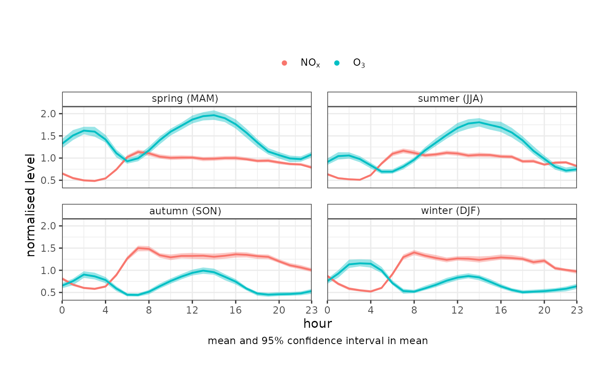

The variationPlot() function is designed to explore how the distribution of
a pollutant (or other variable) changes by another variable (x). For
example, it can be used to explore how the distribution of nox varies by
season or by weekday. This plot can be extensively conditioned using the
type and group arguments, both of which are passed to cutData(). An
appropriate plot type will be chosen based on the type of x - e.g., ordered
variables will be joined by a line.
Usage
variationPlot(
mydata,
pollutant = "nox",
x = "hour",
statistic = "mean",
type = "default",
group = "default",
normalise = FALSE,
difference = FALSE,
conf.int = NULL,
B = 100,
local.tz = NULL,
ci = TRUE,
cols = "hue",
alpha = 0.4,
strip.position = "top",
key.position = "top",
key.columns = NULL,
name.pol = NULL,
auto.text = TRUE,
plot = TRUE,
...
)Arguments
- mydata
A data frame of time series. Must include a
datefield and at least one variable to plot.- pollutant
Name of variable to plot. Two or more pollutants can be plotted, in which case a form like
pollutant = c("nox", "co")should be used.- x
A character value to be passed to
cutData(); used to define the category by whichpollutantwill be varied and plotted.- statistic
Can be
"mean"(default) or"median". If the statistic is"mean"then the mean line and the 95% confidence interval in the mean are plotted by default. If the statistic is"median"then the median line is plotted together with the 5/95 and 25/75th quantiles are plotted. Users can control the confidence intervals withconf.int.- type
Character string(s) defining how data should be split/conditioned before plotting.
"default"produces a single panel using the entire dataset. Any other options will split the plot into different panels - a roughly square grid of panels if onetypeis given, or a 2D matrix of panels if twotypesare given.typeis always passed tocutData(), and can therefore be any of:A built-in type defined in
cutData()(e.g.,"season","year","weekday", etc.). For example,type = "season"will split the plot into four panels, one for each season.The name of a numeric column in
mydata, which will be split inton.levelsquantiles (defaulting to 4).The name of a character or factor column in
mydata, which will be used as-is. Commonly this could be a variable like"site"to ensure data from different monitoring sites are handled and presented separately. It could equally be any arbitrary column created by the user (e.g., whether a nearby possible pollutant source is active or not).
Most
openairplotting functions can take twotypearguments. If two are given, the first is used for the columns and the second for the rows.- group
This sets the grouping variable to be used. For example, if a data frame had a column
sitesettinggroup = "site"will plot all sites together in each panel. Passed tocutData().- normalise
Should variables be normalised? The default is
FALSE. IfTRUEthen the variable(s) are divided by their mean values. This helps to compare the shape of the diurnal trends for variables on very different scales.- difference
If two pollutants are chosen then setting
difference = TRUEwill also plot the difference in means between the two variables aspollutant[2] - pollutant[1]. Bootstrap 95\ difference in means are also calculated. A horizontal dashed line is shown at y = 0. The difference can also be calculated if there is a column that identifies two groups, e.g., having usedsplitByDate(). In this case it is possible to call the function with the optiongroup = "split.by"anddifference = TRUE.- conf.int
The confidence intervals to be plotted. If
statistic = "mean"then the confidence intervals in the mean are plotted. Ifstatistic = "median"then theconf.intand1 - conf.intquantiles are plotted. Any number ofconf.ints can be provided.- B
Number of bootstrap replicates to use. Can be useful to reduce this value when there are a large number of observations available to increase the speed of the calculations without affecting the 95% confidence interval calculations by much.
- local.tz
Used for identifying whether a date has daylight savings time (DST) applied or not. Examples include
local.tz = "Europe/London",local.tz = "America/New_York", i.e., time zones that assume DST. https://en.wikipedia.org/wiki/List_of_zoneinfo_time_zones shows time zones that should be valid for most systems. It is important that the original data are in GMT (UTC) or a fixed offset from GMT.- ci
Should confidence intervals be shown? The default is
TRUE. Setting this toFALSEcan be useful if multiple pollutants are chosen where over-lapping confidence intervals can over complicate plots.- cols
Colours to use for plotting. Can be a pre-set palette (e.g.,
"turbo","viridis","tol","Dark2", etc.) or a user-defined vector of R colours (e.g.,c("yellow", "green", "blue", "black")- seecolours()for a full list) or hex-codes (e.g.,c("#30123B", "#9CF649", "#7A0403")). Alternatively, can be a list of arguments to control the colour palette more closely (e.g.,palette,direction,alpha, etc.). SeeopenColours()andcolourOpts()for more details.- alpha
The alpha transparency used for plotting confidence intervals.
0is fully transparent and 1 is opaque. The default is0.4.- strip.position
Location where the facet 'strips' are located when using
type. When onetypeis provided, can be one of"left","right","bottom"or"top". When twotypes are provided, this argument defines whether the strips are "switched" and can take either"x","y", or"both". For example,"x"will switch the 'top' strip locations to the bottom of the plot.- key.position
Location where the legend is to be placed. Allowed arguments include
"top","right","bottom","left"and"none", the last of which removes the legend entirely.- key.columns
Number of columns to be used in a categorical legend. With many categories a single column can make to key too wide. The user can thus choose to use several columns by setting
key.columnsto be less than the number of categories.- name.pol
This option can be used to give alternative names for the variables plotted. Instead of taking the column headings as names, the user can supply replacements. For example, if a column had the name "nox" and the user wanted a different description, then setting
name.pol = "nox before change"can be used. If more than one pollutant is plotted then usece.g.name.pol = c("nox here", "o3 there").- auto.text
Either
TRUE(default) orFALSE. IfTRUEtitles and axis labels will automatically try and format pollutant names and units properly, e.g., by subscripting the "2" in "NO2". Passed toquickText().- plot
When
openairplots are created they are automatically printed to the active graphics device.plot = FALSEdeactivates this behaviour. This may be useful when the plot data is of more interest, or the plot is required to appear later (e.g., later in a Quarto document, or to be saved to a file).- ...
Addition options are passed on to
cutData()fortypehandling. Some additional arguments are also available, varying somewhat in different plotting functions:title,subtitle,caption,tag,xlabandylabcontrol the plot title, subtitle, caption, tag, x-axis label and y-axis label. All of these are passed through toquickText()ifauto.text = TRUE.xlim,ylimandlimitscontrol the limits of the x-axis, y-axis and colorbar scales.ncolandnrowset the number of columns and rows in a faceted plot.fontsizeoverrides the overall font size of the plot by setting thetextargument ofggplot2::theme(). It may also be applied proportionately to anyopenairannotations (e.g., N/E/S/W labels on polar coordinate plots).Various graphical parameters are also supported:
linewidth,linetype,shape,size,border, andalpha. Not all parameters apply to all plots. These can take a single value, or a vector of multiple values - e.g.,shape = c(1, 2)- which will be recycled to the length of values needed.lineend,linejoinandlinemitretweak the appearance of line plots; seeggplot2::geom_line()for more information.In polar coordinate plots,
annotate = FALSEwill remove the N/E/S/W labels and any other annotations.
Value
an openair object.
Details
When statistic = "mean", the plot shows the 95% confidence intervals in the
mean. The 95% confidence intervals are calculated through bootstrap
simulations, which will provide more robust estimates of the confidence
intervals (particularly when there are relatively few data).
Users can supply their own ylim, e.g. ylim = c(0, 200).
The difference option calculates the difference in means between two
pollutants, along with bootstrap estimates of the 95\
in the difference. This works in two ways: either two pollutants are supplied
in separate columns (e.g. pollutant = c("no2", "o3")), or there are two
unique values of group. The difference is calculated as the second
pollutant minus the first and is labelled accordingly. This feature is
particularly useful for model evaluation and identifying where models diverge
from observations across time scales.
Depending on the choice of statistic, a subheading is added. Users can
control the text in the subheading through the use of sub e.g. sub = ""
will remove any subheading.
See also
timeVariation(), which conveniently assembles many time-related
variation plots into a single plot
Examples
# example using the 'mydata' dataset
variationPlot(
mydata,
pollutant = c("nox", "o3"),
x = "hour",
type = "season",
normalise = TRUE
)
